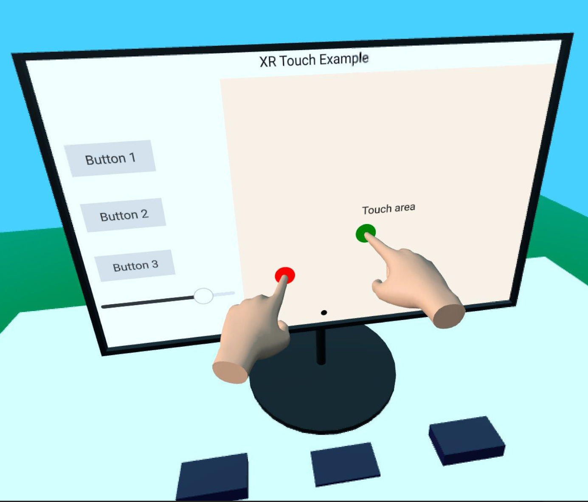

Qt Quick 3D - XR Simple Touch Example
Demonstrates hand-tracking input in Qt Quick 3D Xr.

This example shows how to use the hand-tracking API in Qt Quick 3D Xr to interact with 2D and 3D objects in the scene. It follows the basic structure of the xr_simple example.
Since we need to support two hands, we start by creating a component that encapsulates all the logic that we need for each hand to avoid repetition:
component Hand : Node { id: handComponentRoot property color color: "#ddaa88" required property int touchId property alias hand: handModel.hand property vector3d touchPosition: handController.pokePosition onTouchPositionChanged: { const scenePos = theOrigin.mapPositionToScene(touchPosition) const touchOffset = xrView.processTouch(scenePos, handComponentRoot.touchId) handModel.position = touchOffset buttons.handleTouch(scenePos) } XrController { id: handController controller: handComponentRoot.hand } XrHandModel { id: handModel materials: PrincipledMaterial { baseColor: handComponentRoot.color roughness: 0.5 } } }
The component contains an XrController, giving us the 3D position of the index finger, and an XrHandModel to show where the hand is. The onTouchPositionChanged handler is where the magic happens. We call XrView.processTouch(), which does the heavy lifting: It tries to map the 3D touch position to a 2D position on an XrItem and sends a touch event if it finds an item. It then returns the offset from the 3D position to the touch point on the 2D surface. We then use that offset to shift the position of the XrHandModel, to give the illusion that the hand is stopped by the surface.
Note: This effect will not work on the Apple Vision Pro since the system shows the real hands of the user, and the XrHandModel is not shown.
Finally, we do the 3D interaction. Here, buttons is a group of 3D buttons that has a handleTouch function. (The implementation is not XR specific, so the details are not documented here.)
We create two instances of the hand component inside the XrOrigin, one for each hand:
XrOrigin { id: theOrigin z: 50 Hand { id: rightHandModel hand: XrHandModel.RightHand touchId: 0 } Hand { id: leftHandModel hand: XrHandModel.LeftHand touchId: 1 } } xrOrigin: theOrigin
We also position the origin 50 centimeters from the origin of the scene, which should be a comfortable touching distance.
The rest of the scene contains some 3D models and an XrItem that reacts to touch events.